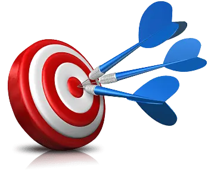
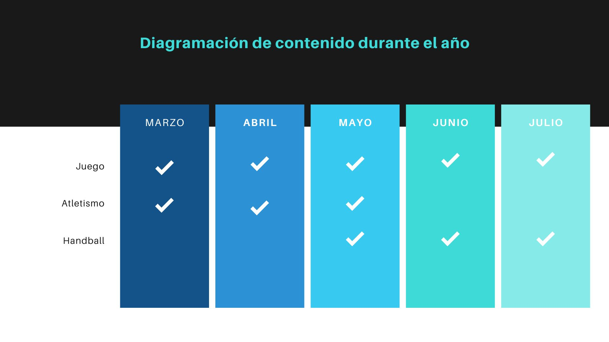

Plan Anual
2023
1 - Datos
Institución Escuela 128 –Mandubí
Bases: EBI - 2023, Programa Escolar
Espacio de Desarrollo Personal y Conciencia Corporal - Área del conocimiento corporal
Clases: 10 clases de 1eros a 6tos años, siendo una clase comunitaria
Profesor: Marcos Mello
Año lectivo: 2023
Calculo aproximado del tiempo
----
Aproximadamente 200 días laborables
40 semanas
3 semanas de vacaciones
1 semanas de competencias
36 semanas de trabajo curricular

Objetivos
Enseñar una amplia gama de contenidos que le brinden a los niños la diversidad de experiencias motrices, sociales e individuales en las que participe activa y placenteramente jerarquizando el valor de lo vivencial.
Brindar, a través de las actividades lúdicas, espacios que le permitan al alumno cooperar, responsabilizarse y reflexionar individual y colectivamente sobre cuestiones éticas en relación al juego.
Promover la construcción de la corporeidad y la motricidad a través del desarrollo de las capacidades sociales, motoras, las habilidades motrices, el conocimiento y la conciencia corporal.
Objetivos especificos
• Reconocer las partes del cuerpo humano y relacionarlas con el movimiento a fin de incrementar la coordinación motriz para desempeñarse adecuadamente en las actividades cotidianas.
• Iniciar el conocimiento, rescate y práctica de los juegos populares y tradicionales para hacer de la actividad física un medio idóneo de preservación de la cultura y de la salud.
• Desarrollar las posibilidades de caminar, correr, saltar, lanzar, a fin de mejorar el desempeño de sus actividades y fomentar la confianza y la seguridad en sí mismo.
• Utilizar adecuadamente los implementos deportivos para estimular la participación activa en la ejecución de las actividades físicas.
• Mantener hábitos de higiene, aseo personal y alimentación saludable en la práctica diaria de actividades físicas
Perfil de desarrollo esperado en alumnos
6-8 años
• Mayor fluidez de movimientos Mayor tono muscular Interés por el juego socializado Juegos de construcción Juegos de personajes Juegos deportivos
8-10 años
• Mayor habilidad motriz Mayor control de actividades de espacio y tiempo Desarrollo de juegos de resistencia Juegos predeportivos Le atrae el carácter competitivo de los juegos
10-12 años
• Mejora la capacidad de esfuerzos constantes Mejora su equilibrio Crecimiento de la musculatura Juegos variados y dinámicosJuego en condiciones normales con adaptación reglamentaria según la situación. Reglas básicas que permiten el juego. Iniciación al arbitraje
